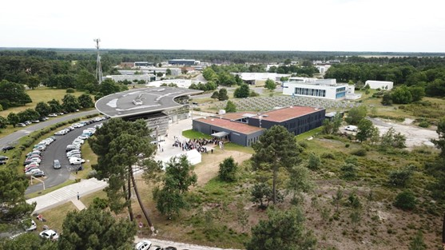

Stage en aménagement · 2026
Zones d’activités de Montesquieu
Diagnostic des zones d’activités économiques de la communauté de communes. Visites de terrain, lecture des PLU et des OAP, comparaison de projets et propositions de réaménagement.